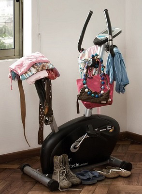
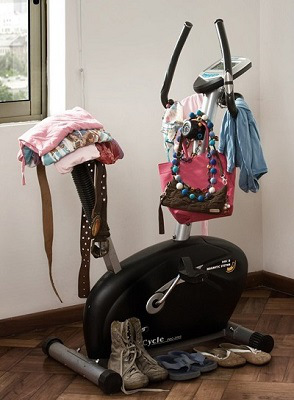
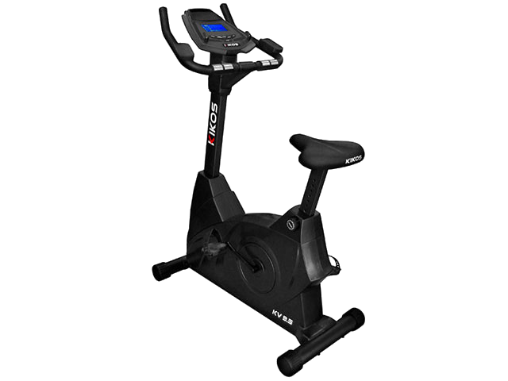
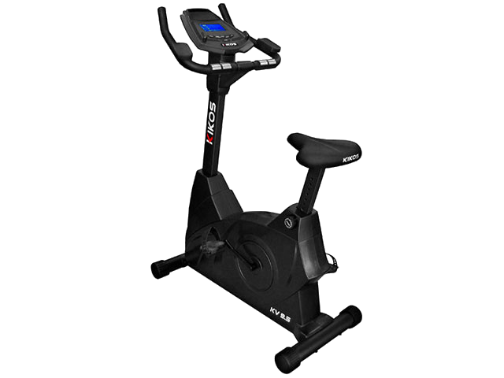
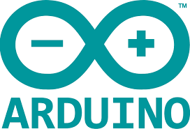
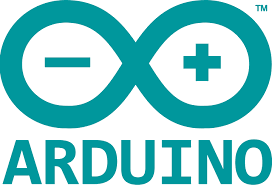
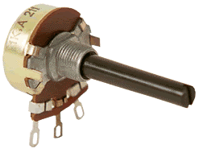
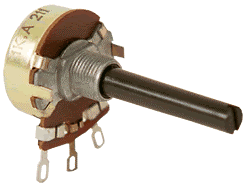

O que é o Bike-X?
Já imaginou poder andar de bicicleta em qualquer lugar sem sair de sua sala de estar?

Presenter Notes
O que queremos resolver?


Presenter Notes
Pra quem?
 

Presenter Notes
Concorrentes? Obstáculos?
 

Presenter Notes
Fluxo de trabalho


Presenter Notes
Tecnologias utilizadas

 



 
